Sígueme en redes
Nunca me gustó cerrarme a un solo estilo fotográfico, esta galería temática muestra un poco ese espacio donde se puede experimentar y ver el detalle de distintos temas que pueden surgir en mis sesiones, ya que son varias las propuestas que suelen llegarme de vez en cuando y no suelo negarme a casi ninguna. Se aprende de verdad cuando se sale de la zona de confort.
Sesión temática
Algunas veces me centro en potenciar las líneas del traje de flamenca y los contrastes para llegar a un equilibrio entre fotografía de moda y tradición, gracias a Maria José se pueden representar muy bien esas líneas tan flamencas. Otras veces busco algo más de improvisación y hacer algo diferente, como fusionar dos conceptos culturales en uno, así nació nuestro peculiar "Flamenco-rococó" junto a Gisela Marín.
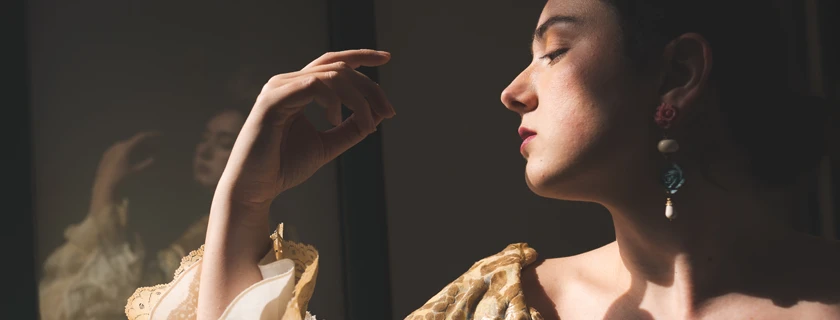
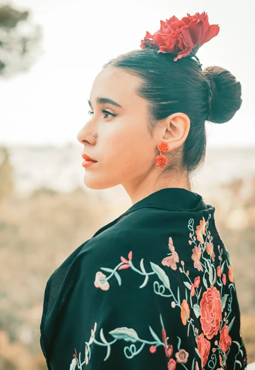
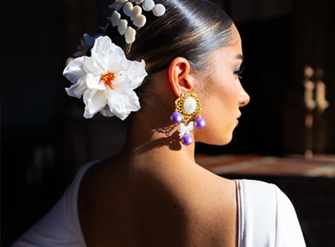
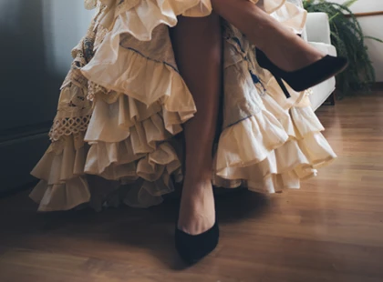
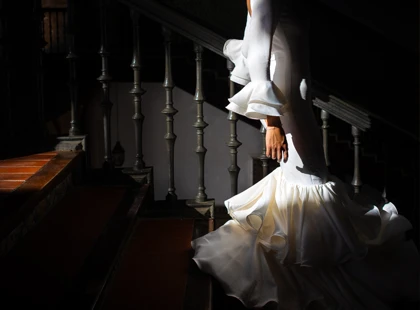
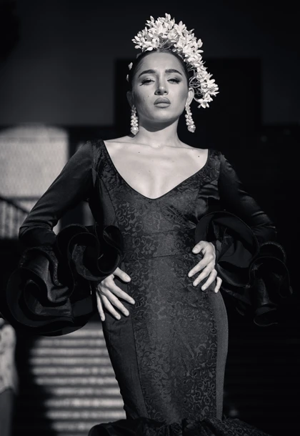
Modelos: Gisela Marín, Angela Moreno y Maria José Carretero. Maquillaje: Fátima Reinoso y Maria José Carretero. Diseño y Complementos: Mara Ordoñez. Localizaciones: Plaza de España y Hotel Oromana - Sevilla, ES.
Sesión temática
La sobriedad del traje de mantilla va más allá de la estética, es una tradición con unas reglas muy marcadas para el Jueves y Viernes Santo de nuestra cultura de Sevilla y poder contar con Laura Borrego y Lucia Martín ha sido clave. El objetivo es mostrar cómo luce realmente este estilo en la calle, respetando el protocolo pero buscando un acabado visual limpio y destacar la pureza de los detalles.
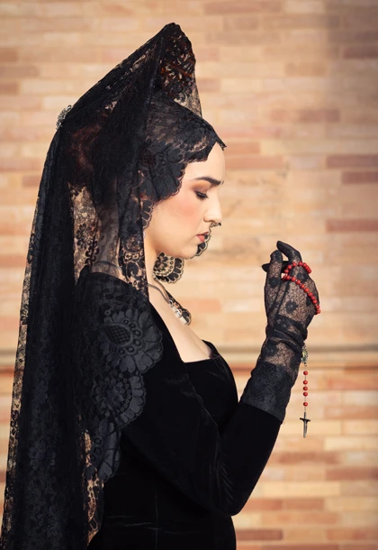
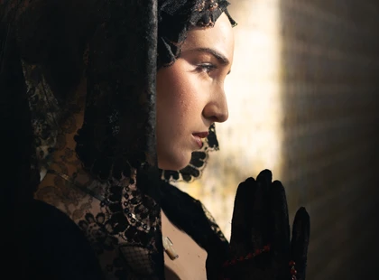
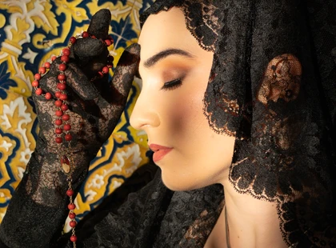
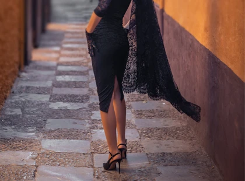
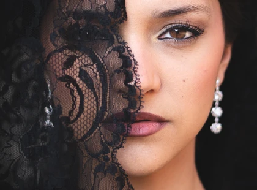
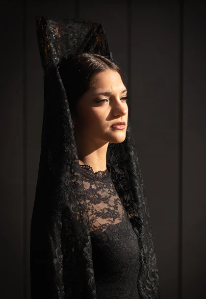
Modelos: Laura Borrego y Lucía Martín. Maquillaje: Rosa María López. Localizaciones: Plaza de España y Barrio de Santa Cruz - Sevilla, ES.